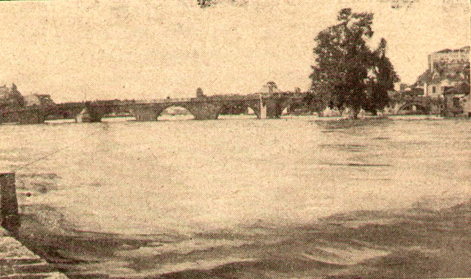
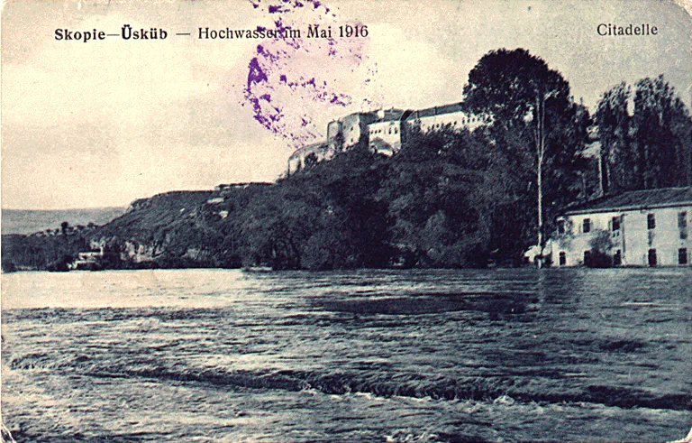
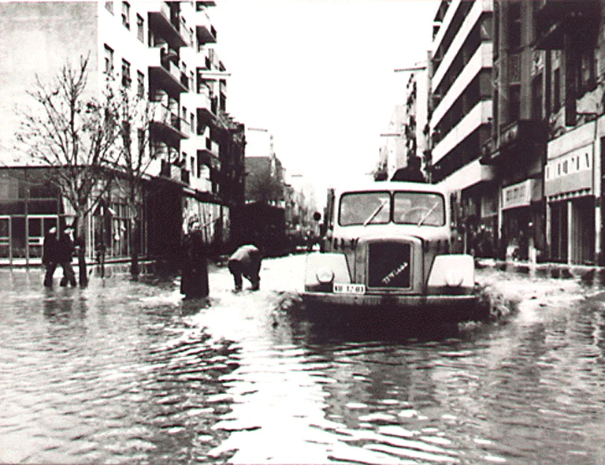

Поплава 1962 - 1
- Сценарио и режија
- Трајче Попов и Бранко Гапо
- Снимател
- Бранко Михајловски и Душан Гајиќ
- Година
- 1963
- Должина
- 00:16

Поплавата на Еврејското маало во 1895 година. Фотографирано е од Камениот мост кон турскиот театар. Во позадината горе се гледа скопската тврдина - Кале.

Поплавата во 1895 година.

Поплавата во 1895 година.

Поплавата во 1897 година.

Поплавата во 1916 година.

Поплавата во Мај 1916 година. Поглед на р.Вардар кај дрвеното мовче. Десно се гледа кафеаната "Богес", во која се одржувале првите театарски претстави. Во позадината горе се гледа скопската тврдина - Кале.

Поплавата во Мај 1916 година. Главната улица пред католичката црква.

Поплавата во Мај 1916 година, на кејот 13 Ноември, веднаш до Камениот мост, на левата страна р.Вардар. Во позадина се гледа Бурмали џамија.

Поплавата - 1962 година. Главната улица до плоштадот.


 Аквадукт4 разгледници
Аквадукт4 разгледници Кале30 разгледници
Кале30 разгледници Мостови60 разгледници
Мостови60 разгледници Кеј58 разгледници
Кеј58 разгледници Плоштад46 разгледници
Плоштад46 разгледници Објекти66 разгледници
Објекти66 разгледници Христијански храмови19 разгледници
Христијански храмови19 разгледници Муслимански објекти33 разгледници
Муслимански објекти33 разгледници Офицерски дом29 разгледници
Офицерски дом29 разгледници Театар28 разгледници
Театар28 разгледници Железничка станица13 разгледници
Железничка станица13 разгледници Училишта36 разгледници
Училишта36 разгледници Паркови12 разгледници
Паркови12 разгледници Пазари18 разгледници
Пазари18 разгледници Улици38 разгледници
Улици38 разгледници Панорама I60 разгледници
Панорама I60 разгледници Панорама II30 разгледници
Панорама II30 разгледници Колажи55 разгледници
Колажи55 разгледници Поплави9 разгледници
Поплави9 разгледници Земјотрес27 разгледници
Земјотрес27 разгледници Скопје 200026 разгледници
Скопје 200026 разгледници